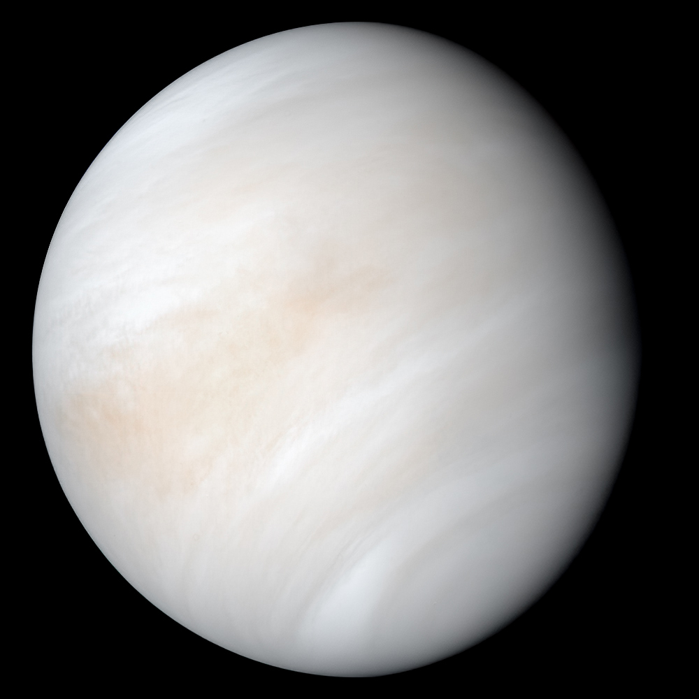
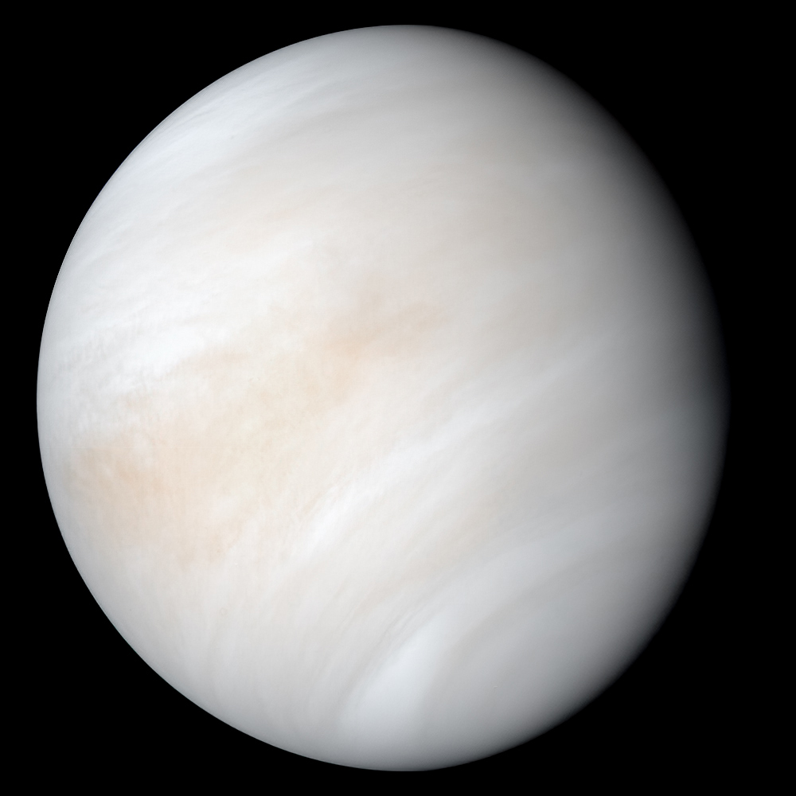

Tabelul Planetelor și Caracteristicile Lor
| Planetă |
Rază (km) |
Distanță față de Soare (mil. km) |
Temperatură (°C) |
Sateliți |
| Mercur | 2,439.7 | 57.9 | 167 | 0 |
| Venus | 6,051.8 | 108.2 | 464 | 0 |
| Terra | 6,371 | 149.6 | 15 | 1 (Luna) |
| Marte | 3,396 | 227.9 | -60 | 2 (Phobos, Deimos) |
| Jupiter | 69,911 | 778.3 | -108 | 79 |
| Saturn | 58,232 | 1,429 | -139 | 83 |
| Uranus | 25,362 | 2,871 | -195 | 27 |
| Neptun | 24,622 | 4,498 | -200 | 14 |
Galerie Foto cu Planetele
Fapte interesante despre Stele și Planete
- Stelele sunt obiecte masive care emit lumină proprie prin reacții nucleare.
- Planetele pot fi terestre (roci) sau gazoase (fără suprafață solidă).
- Jupiter este cea mai mare planetă din sistemul nostru solar.
- Uranus are o rotație aproape perpendiculară pe planul orbitei sale.
 
